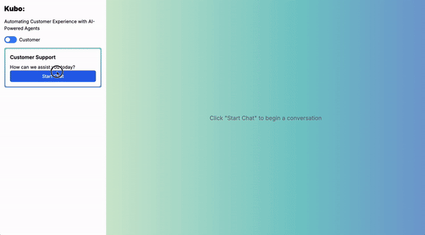
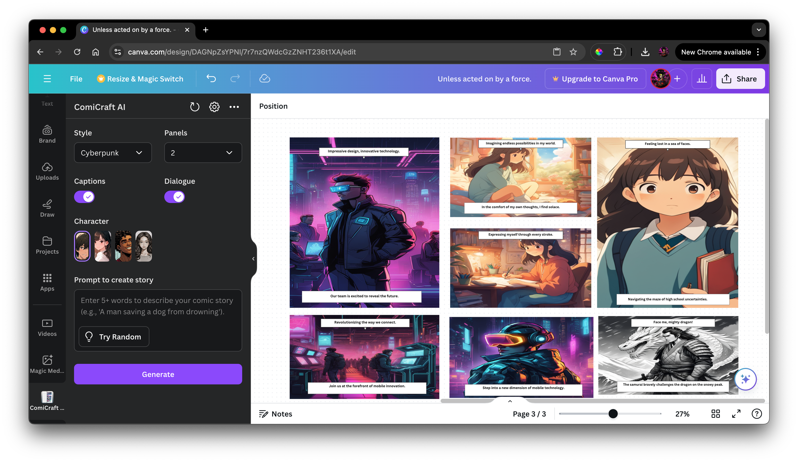
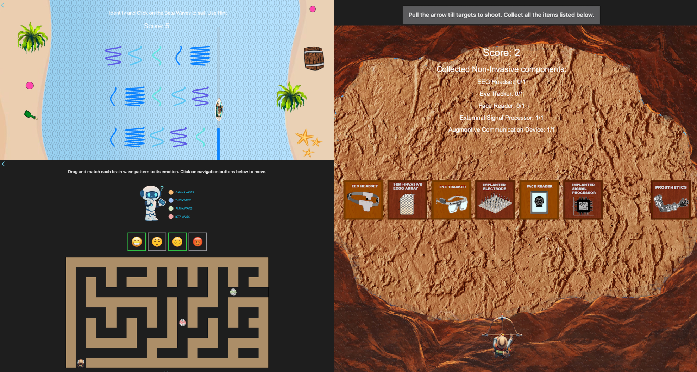
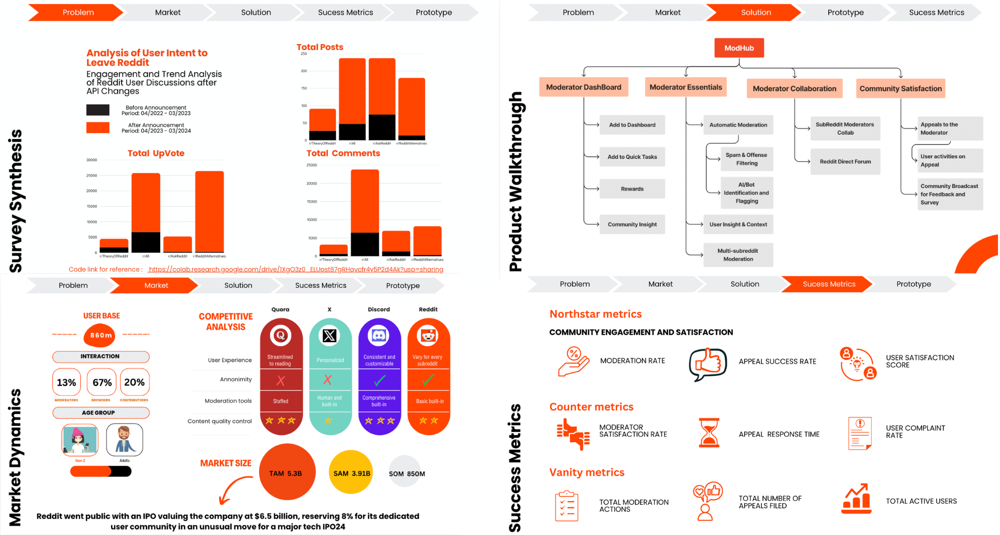
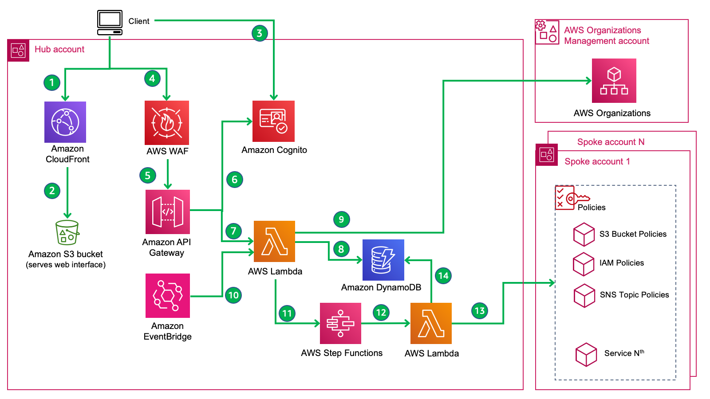
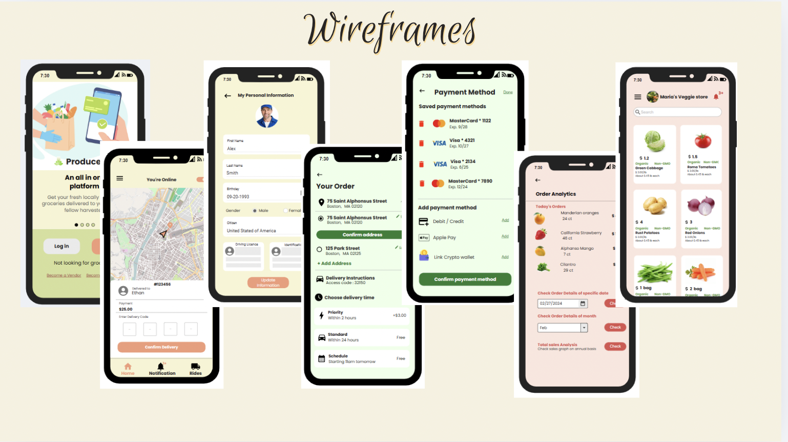

Kubo AI

Overview
An AI-powered customer support assistant designed to provide real-time, interactive support through conversational video-based interactions. The system combines object recognition, contextual understanding, personalized recommendations, and a centralized knowledge base to deliver accurate and adaptive responses. It also includes admin controls for configuring AI behavior, managing resources, and monitoring performance through analytics dashboards and user insights.
Development Insight
Built using a React and Three.js frontend with a Node.js/Express backend, the project combines conversational AI, real-time speech processing, and computer vision to create an interactive AI support avatar. The LLM workflows is integrated using LangChain, LlamaIndex, RAG pipelines, and OpenVINO-powered model serving for speech-to-text, text-to-speech, object recognition, and lip-sync processing. The system also used MongoDB for contextual memory and vector storage, enabling personalized and context-aware interactions in real time.
Award
2nd Runner Up - RedHat and Intel AI Hackathon 2024
ComiCraftAI

Overview
An AI-powered comic generation platform that transforms written stories into visually consistent comic strips. Users can customize comic styles, characters, panel layouts, captions, and dialogue while the system automatically generates illustrated scenes and narratives. The project focuses on making comic creation faster and more accessible without requiring artistic or design experience.
Development Insight
Built with a Node.js and Express backend, the platform combines OpenAI’s GPT models for story generation and narration with Stable Diffusion (SDXL) for image creation. To maintain character consistency across multiple comic panels, LoRA-based fine-tuned models trained on specific visual styles and characters are integrated. This combination of LLM-driven storytelling and AI image generation streamlined the entire comic creation workflow while preserving visual coherence and storytelling quality.
Neuro-Explorer

Overview
Neuro-Explorer: A BCI Odyssey is an educational game designed to introduce players to Brain-Computer Interface (BCI) technology through interactive storytelling and gameplay. Players explore how brainwaves can be used to assist individuals with disabilities by completing challenges focused on BCI concepts, component discovery, and brainwave pattern training inspired by machine learning. The project blends learning with immersive gameplay to make complex concepts more engaging and accessible.
Development Insight
Built entirely for iOS using SwiftUI and SpriteKit, the game combines interactive 2D gameplay with dynamic animations, physics-based interactions, and custom-designed visual assets. SpriteKit handled the core game mechanics, object collisions, and animations, while SwiftUI managed navigation and interface design. Combine is used for asynchronous event handling and recurring gameplay interactions, creating a smooth and responsive user experience throughout the game.
Award
Distinguished Winner - Apple Swift Student Challenge 2024
Reddit ModHub

Overview
A product research and strategy project focused on improving user retention and trust within Reddit. The project explored how moderation power imbalances, censorship concerns, and changes to Reddit’s API pricing impacted user satisfaction and community reliability, especially during the 2023 Reddit blackout sparked by the shutdown of popular third-party apps like Apollo and RIF. The goal was to identify trust gaps within the platform and propose product-driven solutions that improve transparency, moderation accountability, and long-term community engagement.
Product Research Insight
Conducted large-scale sentiment analysis using Reddit API data alongside user interviews, surveys, competitive analysis, and market research to identify key pain points and behavioral patterns. Developed user personas, defined KPIs and success metrics, and translated research insights into product requirements and feature roadmaps using KANO and RICE prioritization models. The project concluded with development of a prototype for product pitch that simplified complex moderation and power-dynamic issues into actionable product solutions focused on improving platform trust and user retention.
Award
Winner (1st place) - NEU Protothon 5.0 - A Product Management Hackathon
Cloud-Native Web App

Overview
A cloud-native assignment management platform designed with a strong focus on scalability, reliability, and infrastructure automation. The system allows users to create, manage, and submit assignments while leveraging resilient cloud architecture, automated deployments, event-driven services, and distributed infrastructure to ensure high availability and operational stability under varying workloads.
Development Insight
Built using Node.js, MySQL, and RESTful APIs, the platform was deployed on AWS using Terraform to provision infrastructure including VPCs, EC2 instances, IAM roles, load balancing, autoscaling, and S3 storage. CI/CD pipelines with GitHub Actions, automated AMI creation using HashiCorp Packer, and integrated CloudWatch for monitoring is implemented. The system also used microservices and event-driven workflows with SNS-triggered Lambda functions, Route 53 DNS automation, DynamoDB for email tracking, and Mailgun-based notification services for reliable asynchronous processing.
ProducePal- UI/UX

Overview
ProducePal is a UI/UX project designed to help local farmers connect directly with nearby consumers through a more transparent and accessible digital experience. The platform focuses on improving access to fresh, locally sourced produce while helping farmers expand their market reach and strengthen customer relationships. By simplifying discovery and communication, the project aimed to create a more convenient and community-driven food ecosystem.
UI/UX Research Insight
The project was developed through a user-centered design process that involved identifying core user pain points, defining objectives, and researching consumer and farmer behaviors. Personas, empathy maps, SWOT analysis, and card-sorting exercises to shape the information architecture and user flows were created. Features were prioritized using the MoSCoW framework, followed by interactive prototyping and usability validation through A/B testing and iterative design improvements.